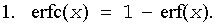
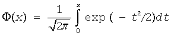
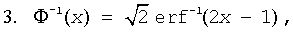

Computes the complementary error function value of vector elements.
Syntax
call vserfc( n, a, y )
call vserfci(n, a, inca, y, incy)
call vmserfc( n, a, y, mode )
call vmserfci(n, a, inca, y, incy, mode)
call vderfc( n, a, y )
call vderfci(n, a, inca, y, incy)
call vmderfc( n, a, y, mode )
call vmderfci(n, a, inca, y, incy, mode)
Include Files
- mkl_vml.f90
Input Parameters
Name |
Type |
Description |
|---|---|---|
n |
INTEGER, INTENT(IN) |
Specifies the number of elements to be calculated. |
a |
DOUBLE PRECISION for vderfc, vmderfc REAL, INTENT(IN) for vserfc, vmserfc DOUBLE PRECISION, INTENT(IN) for vderfc, vmderfc |
Array that specifies the input vector a. |
inca, incy |
INTEGER, INTENT(IN) |
Specifies increments for the elements of a and y. |
mode |
INTEGER(KIND=8), INTENT(IN) |
Overrides global VM mode setting for this function call. See vmlSetMode for possible values and their description. |
Output Parameters
Name |
Type |
Description |
|---|---|---|
y |
DOUBLE PRECISION for vderfc, vmderfc REAL, INTENT(OUT) for vserfc, vmserfc DOUBLE PRECISION, INTENT(OUT) for vderfc, vmderfc |
Array that specifies the output vector y. |
Description
The Erfc function computes the complementary error function values for elements of the input vector a and writes them to the output vector y.
The complementary error function is defined as follows:
Useful relations:


where

is the cumulative normal distribution function.

where Φ-1(x) and erf-1(x) are the inverses to Φ(x) and erf(x) respectively.
See also Figure "Erf Family Functions Relationship" in Erf function description for Erfc function relationship with the other functions of Erf family.
| Argument | Result | VM Error Status | Exception |
|---|---|---|---|
| X > underflow | +0 | VML_STATUS_UNDERFLOW | UNDERFLOW |
| +∞ | +0 | ||
| -∞ | +2 | ||
| QNAN | QNAN | ||
| SNAN | QNAN | INVALID |